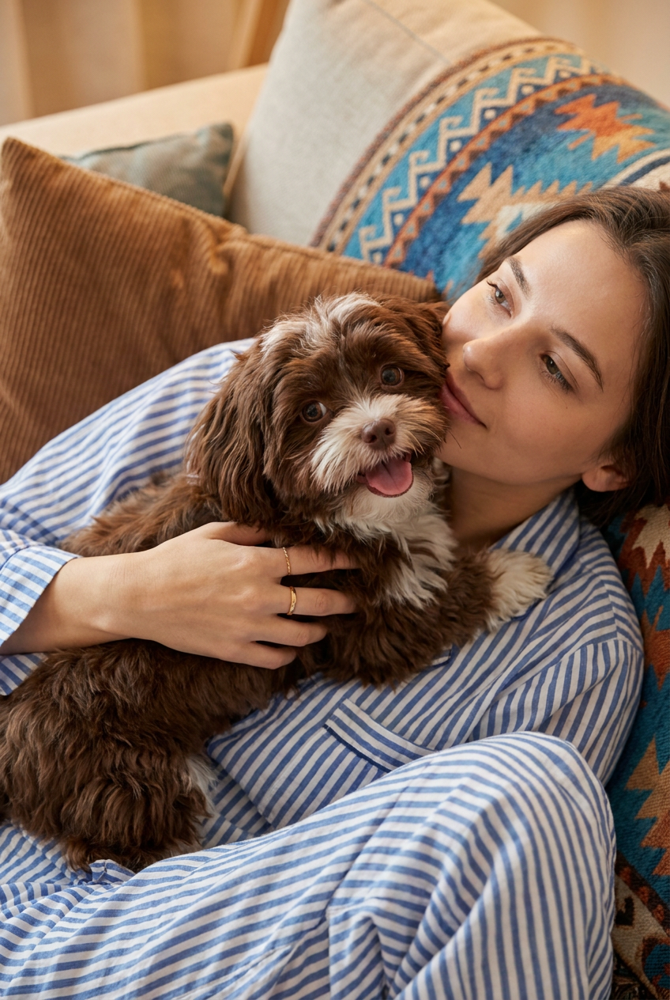
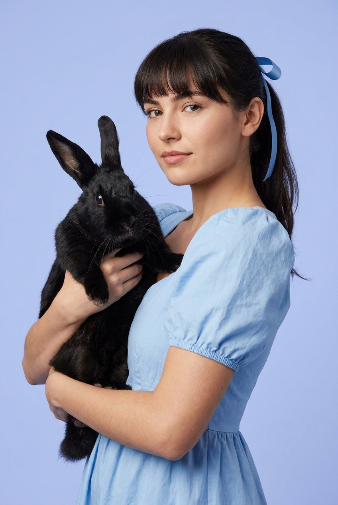
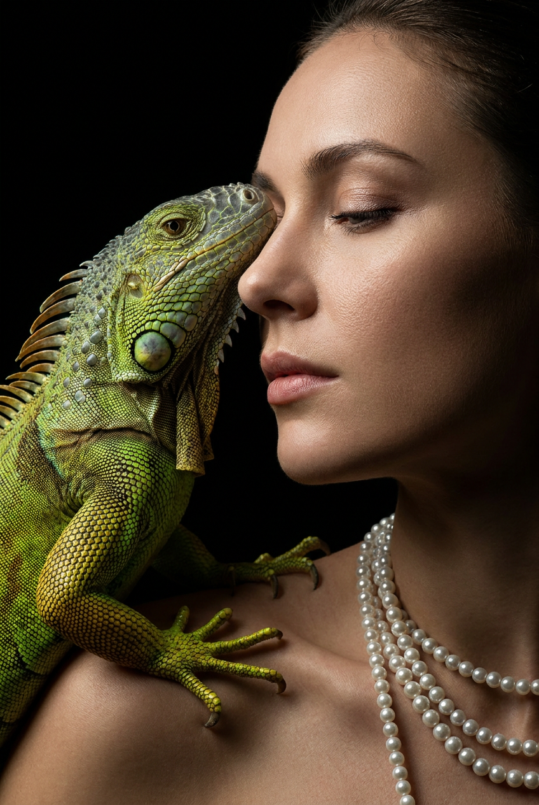
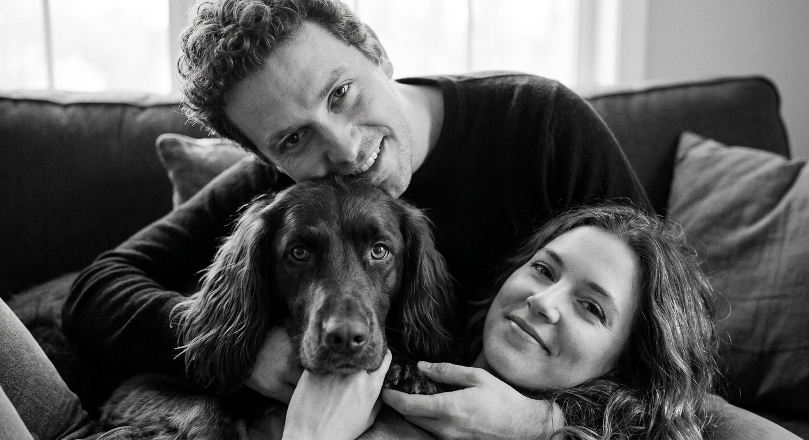
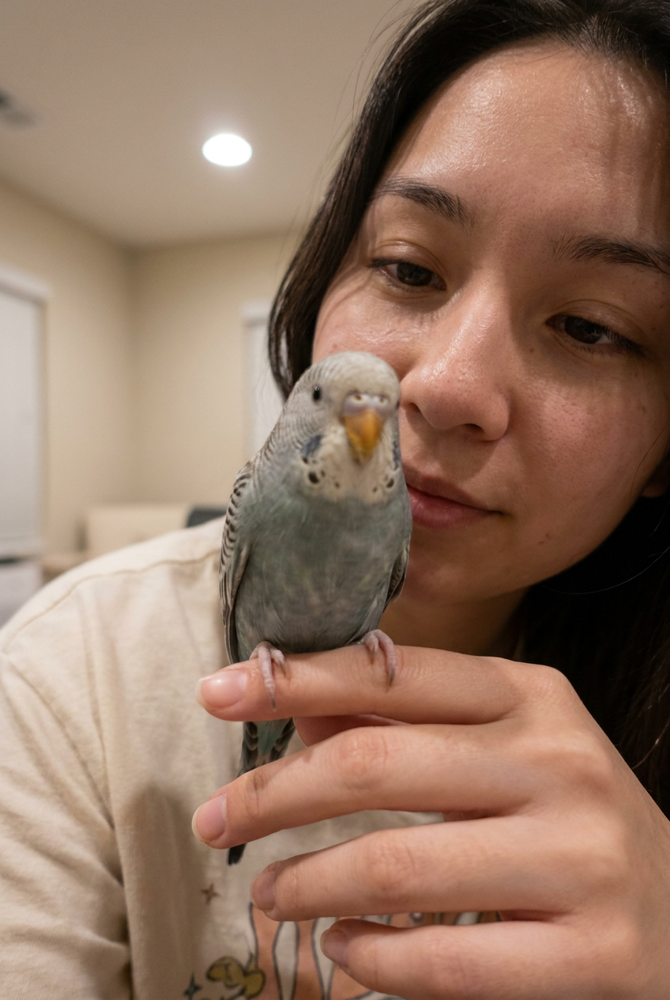
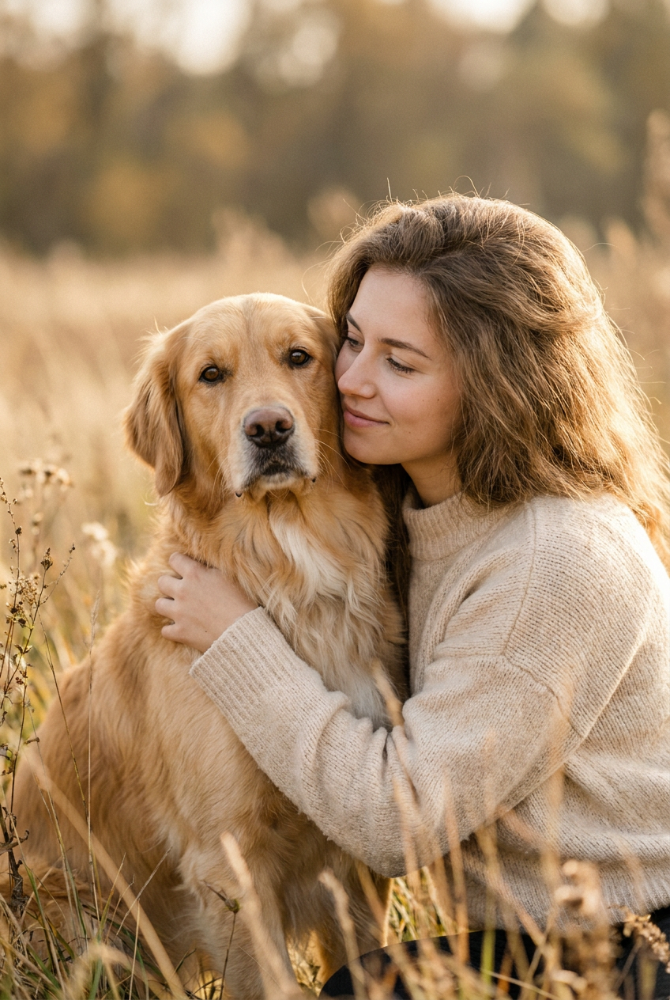
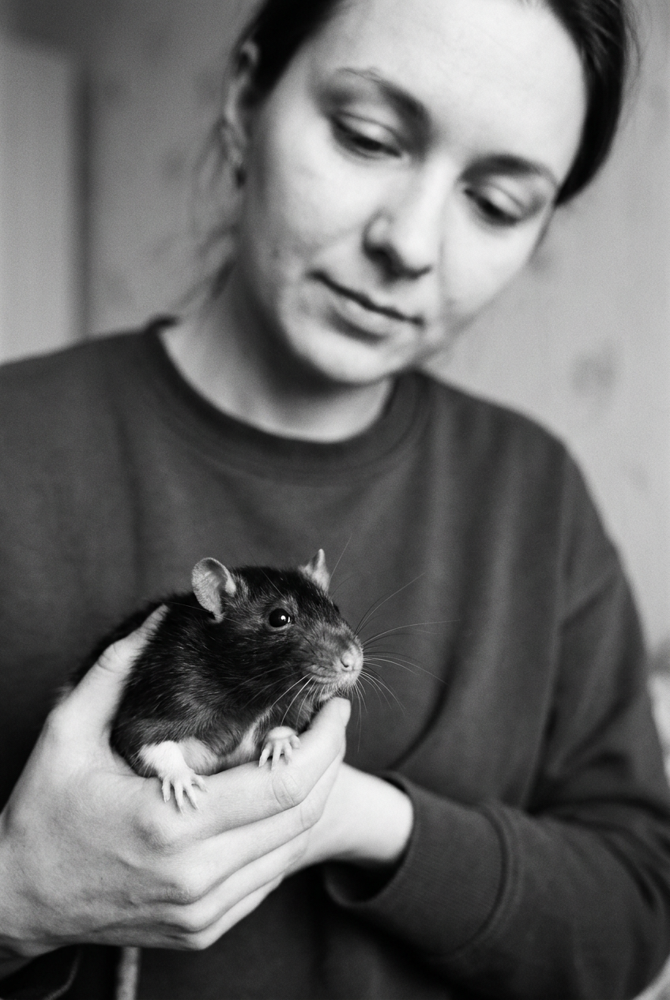
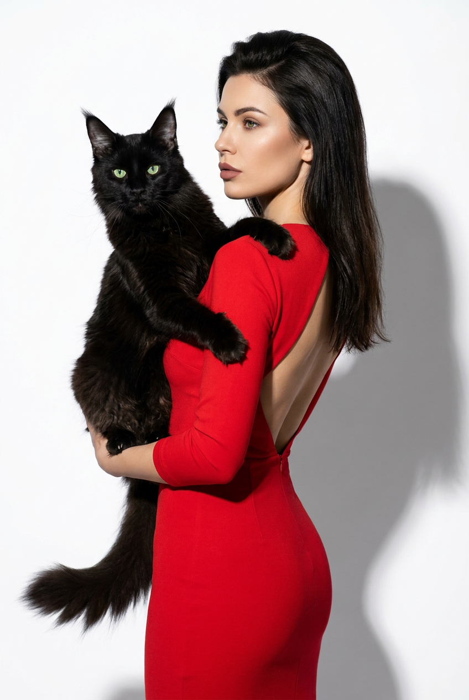
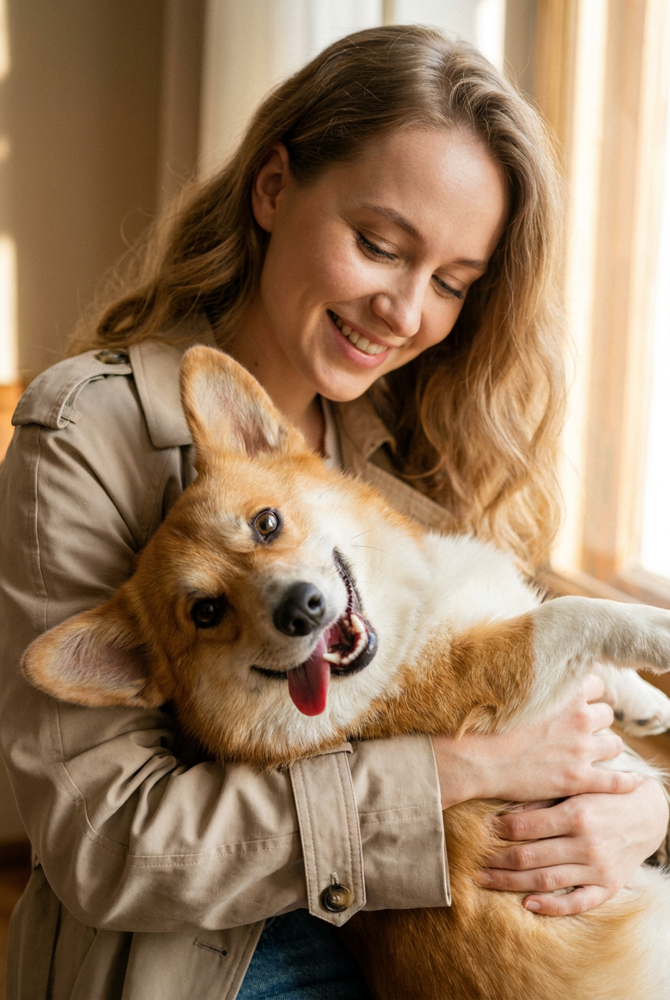
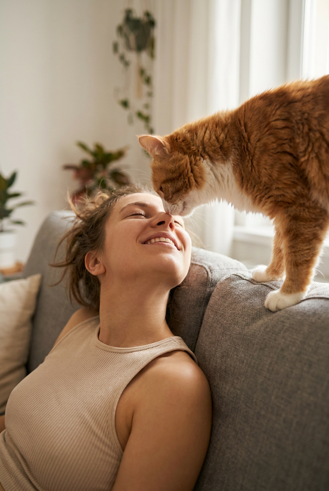

ИИ-фото с питомцем: 10 промптов для нейросети

Обычная фотография с питомцем не всегда получается удачной: животное отворачивается, человек теряется в кадре, а важные детали шерсти и взгляда пропадают. Генерация помогает собрать сцену заново — с нужным светом, эмоцией, ракурсом и композицией.
В подборке — десять сценариев для ИИ-фото: домашние снимки на диване, студийные fashion-портреты, чёрно-белая плёнка, тёплая съёмка на природе и необычные кадры с кроликом, игуаной, попугаем и крысой.
Как сгенерировать такое фото: пошагово
Нужен снимок анфас при ровном свете, лицо в кадре целиком, без тёмных очков и головных уборов. Разрешение от 1000 пикселей по короткой стороне. Чем чётче исходник, тем точнее модель повторит черты.
Выберите сценарий ниже и нажмите «Копировать» — текст уйдёт в буфер целиком, вместе с командой сохранения внешности. Эта команда стоит первой строкой и отвечает за то, чтобы на выходе было ваше лицо, а не случайное.
Кнопка «Сгенерировать» рядом с каждым промптом открывает модель в новой вкладке. Nano Banana Pro работает с референсом лица — в отличие от моделей, которые генерируют портрет с нуля и узнаваемость теряют.
Промпт — в поле ввода, портрет — через загрузку референса. Порядок значения не имеет, но без референса команда сохранения внешности работать не будет: модели нечего сохранять.
Для сторис и ленты берите 9:16, для превью и обложек — 4:3. Первый результат редко идеален: если поза или свет ушли не туда, поправьте соответствующую часть промпта и запустите заново. Обычно хватает двух-трёх итераций.
10 промптов для генерации
1. Собака на диване
Строго сохранить внешность по загруженному референсу: черты лица, пропорции, мимику и текстуру кожи без изменений. Фотореалистичный lifestyle-кадр в уютной комнате, вертикальная композиция, камера расположена сверху под небольшим углом, overhead / high angle. В центре — молодая женщина, лежащая или полусидящая на диване; её лицо расслаблено, взгляд направлен немного в сторону и вверх, не прямо в объектив. На ней голубая домашняя пижама в тонкую вертикальную бело-синюю полоску, ткань натурально помята, на рукавах и корпусе заметны складки. Женщина обеими руками прижимает к груди и лицу маленькую пушистую длинношёрстную собаку. Морда животного находится в центре кадра: шоколадно-коричневый окрас, белая мордочка и грудка, коричневые уши и пятна, крупные тёмные глаза, тщательно прорисованные волоски. Собака сидит на женщине, слегка приоткрыла пасть и высунула кончик языка, выражение игривое и радостное. В кадре видны руки женщины, украшения и мелкие детали шерсти. Мягкий естественный свет, реалистичная кожа, высокая детализация, объектив 50 мм, малая глубина резкости.
2. Девушка с чёрным кроликом

Строго сохранить внешность по загруженному референсу: черты лица, пропорции, мимику и текстуру кожи без изменений. Вертикальный фотореалистичный студийный портрет в стиле beauty и fashion photography. Фон гладкий, чистый, светло-голубой или лавандовый, без лишних предметов; ровный мягкий свет, аккуратная ретушь без потери текстуры кожи. Девушка расположена справа и немного по центру, корпус развёрнут в 3/4, голова слегка наклонена влево, к кролику. Она смотрит прямо в объектив, выражение спокойное, уверенное, с едва заметной полуулыбкой. Плечи расслаблены, поза подчёркивает рукава и силуэт платья. Слева девушка держит крупного чёрного кролика, который занимает около 35–45 процентов ширины кадра. Животное прижато к груди: одна ладонь поддерживает тело и задние лапы снизу, вторая рука мягко обнимает его. Голова кролика повернута вправо, к камере, взгляд читается, оба длинных уха полностью видны и стоят вертикально. Резкость на глазах, шерсти и пальцах, естественные пропорции, вертикальный fashion-кадр, объектив 85 мм.
3. Портрет с игуаной

Строго сохранить внешность по загруженному референсу: черты лица, пропорции, мимику и текстуру кожи без изменений. Драматичный фотореалистичный студийный портрет в вертикальном формате, крупный план, эстетика editorial beauty с экзотическим животным. Фон почти чёрный, low-key освещение формирует выразительный мягкий рисунок на коже и чешуе, вокруг — глубокие тени. Женщина находится справа, частично выходит к центру, её лицо показано в левом профиле. Голова чуть наклонена к игуане, глаза закрыты или полуприкрыты, губы расслаблены, настроение тихое и доверительное. Игуана занимает левую часть композиции и вытянута поперёк кадра. Её морда повернута вправо и почти касается щеки, века или лба женщины, создавая ощущение нежного контакта. Передняя часть тела и лапы лежат на груди и плече, посадка выглядит плотной и естественной; длинный хвост уходит в нижний левый угол. Подробно прорисовать чешую, гребень, когти, складки кожи, глаза и фактуру хвоста. Лица обоих персонажей остаются узнаваемыми, но игуана частично перекрывает пространство перед лицом. Объектив 100 мм macro, резкость на глазах и морде, кинематографичный контраст.
4. Семейный кадр с собакой

Строго сохранить внешность по загруженному референсу: черты лица, пропорции, мимику и текстуру кожи без изменений. Кинематографичный чёрно-белый lifestyle-портрет, вертикальный close-up, ощущение случайно пойманного счастливого момента. Мужчина и женщина лежат на диване и обнимаются, а между ними на переднем плане находится крупная голова их собаки. Композиция построена в три слоя. В верхней части кадра, чуть дальше, виден мужчина: взрослый, с чёткой фактурой кудрявых волос, в тёмной футболке или кофте. Он наклоняет голову вперёд, смотрит в объектив и улыбается открыто, с видимыми зубами; лицо занимает примерно 25–35 процентов ширины кадра. В центре, ближе всего к камере, лежит собака, поддерживаемая руками женщины. Она смотрит прямо в объектив, глаза большие и резкие, пасть закрыта. Шерсть длинная, волнистая или кудрявая, тёмно-коричневая либо чёрная, с мягкими светлыми подпалинами над глазами и на щеках; нос влажный, тёмный. Женщина остаётся частично за собакой, её руки поддерживают животное, мужчина и собака эмоционально связаны. Мягкий направленный свет, плёночная фактура, естественное зерно, объектив 50 мм, малая глубина резкости.
5. Селфи с попугаем

Строго сохранить внешность по загруженному референсу: черты лица, пропорции, мимику и текстуру кожи без изменений. Фотореалистичная домашняя съёмка в вертикальном формате, очень близкий план, лёгкая перспектива селфи с телефона. Тёплый комнатный свет, natural phone-camera look, малая глубина резкости и мягкое размытие фона. Молодая девушка занимает центрально-левую часть кадра, её голова повернута вправо, к птице. Естественные пряди волос частично закрывают висок и скулу. Взгляд девушки направлен на попугая, выражение живое, нежное и заинтересованное. Голова и клюв маленького попугая находятся в центре и ближе всего к объективу, птица занимает около 35–55 процентов ширины кадра. Она частично закрывает нижнюю часть лица девушки, при этом глаза девушки остаются читаемыми. Нижний край кадра занимает рука: ладонь и пальцы поддерживают птицу на уровне губ. Акцент резкости — на голове, клюве, глазах и перьях попугая; лицо девушки чуть мягче, но не теряет деталей. Сохранить естественную близость камеры, лёгкую асимметрию мобильного снимка, реалистичные оттенки кожи и перьев, объектив 28 мм, вертикальный кроп.
6. Объятие с золотистым ретривером

Строго сохранить внешность по загруженному референсу: черты лица, пропорции, мимику и текстуру кожи без изменений. Фотореалистичный lifestyle-портрет на природе, вертикальный кадр, мягкий естественный свет и спокойное интимное настроение. Молодая женщина находится справа, стоит или слегка приседает, корпус развёрнут влево, голова повернута к собаке, взгляд направлен на неё. Волосы распущены, объёмные пряди почти полностью закрывают плечи. На женщине кремово-бежевый вязаный свитер с заметной мягкой фактурой нитей. Одной рукой она прижимает собаку к груди, создавая ощущение настоящего объятия. Слева и немного по центру кадра — золотистый ретривер или собака похожего типа. Шерсть тёплого золотисто-медового оттенка, грудь и морда светлее, отдельные волоски прорисованы натурально. Собака стоит почти вертикально или слегка приподнята над травой, шея и передняя часть тела находятся рядом с лицом женщины. Морда повернута к камере, глаза карие и выразительные, нос имеет влажный блеск. Фон природы мягко размытый, без отвлекающих объектов, shallow depth of field, объектив 85 мм, мягкое боковое освещение.
7. Чёрно-белый портрет с крысой

Строго сохранить внешность по загруженному референсу: черты лица, пропорции, мимику и текстуру кожи без изменений. Фотореалистичная чёрно-белая indoor-фотография в вертикальном формате, candid lifestyle, лёгкий film photo look и мягкая плёночная зернистость. Использовать малую глубину резкости: крыса на переднем плане максимально резкая, девушка позади слегка размыта. Крыса расположена в нижней левой части кадра и занимает примерно 35–50 процентов его ширины, её голова повернута к зрителю, немного вправо. Животное опирается на ладони девушки, будто лежит на руках; передние лапки естественно приподняты и слегка согнуты. В фокусе должны быть глаза, нос, усы и тонкая фактура шерсти. Девушка находится в верхних 55–65 процентах кадра, смотрит на крысу с мягкой улыбкой или спокойным тёплым выражением. Её лицо и фон не конкурируют с животным по резкости. Свет рассеянный, без жёстких бликов, градации серого глубокие, но детали в тенях сохранены. Эффект аналоговой камеры, объектив 50 мм, диафрагма f/1.8, естественная композиция без постановочной симметрии.
8. Мейн-кун в студии

Строго сохранить внешность по загруженному референсу: черты лица, пропорции, мимику и текстуру кожи без изменений. Фотореалистичное студийное fashion-изображение, вертикальный портрет на белом бесшовном фоне. High-key освещение, чистая рекламная эстетика, минимум деталей за спиной; женщина и кот отбрасывают на белую стену мягкие, но заметные графичные тени. Женщина занимает правую часть кадра, показана в полный рост или почти в полный рост, с главным акцентом на голове и корпусе. Она развёрнута боком либо в 3/4, голова повернута влево, взгляд направлен немного в сторону и вдаль, выражение спокойное, уверенное, модельное. Слева находится большой мейн-кун, занимающий около 35–45 процентов ширины изображения. Кот сидит у женщины на руках на уровне груди и прижат к верхней части корпуса; обе руки поддерживают его тело естественно и безопасно. Подробно передать длинную шерсть, кисточки на ушах, объём хвоста, усы, глаза и форму лап. Сохранить чистый белый фон без мебели и декора, резкую фактуру одежды и шерсти, мягкий студийный свет с контролируемыми тенями, объектив 70 мм, вертикальная рекламная композиция.
9. Девушка и корги крупным планом

Строго сохранить внешность по загруженному референсу: черты лица, пропорции, мимику и текстуру кожи без изменений. Тёплый фотореалистичный lifestyle-портрет в интерьере, вертикальная композиция, medium close-up от плеч до верхней части корпуса. Молодая девушка слегка наклоняется к камере сверху, а в руках держит корги, лежащего на спине и расположенного очень близко к объективу. Голова девушки повернута немного влево, в лёгком профиле 3/4; она смотрит на собаку, улыбается с приоткрытыми губами, глаза полуприкрыты, выражение нежное и радостное. Волосы слегка волнистые, несколько прядей падают на грудь. На ней светлый бежевый или молочный тренч с матовой тканью, заметными швами и естественными складками. Корги занимает передний план, его морда находится в центре кадра и смотрит прямо в объектив. Окрас рыжевато-медовый, белая морда и грудь, белые отметины на лапах, тёмный нос. Шерсть густая, с реалистичными мягкими переходами цвета. Сделать глаза и нос собаки главным фокусом, лицо девушки чуть мягче, но выразительным. Тёплый домашний свет, неглубокая ГРИП, объектив 50 мм, естественная эмоциональная сцена.
10. Кот над лицом девушки

Строго сохранить внешность по загруженному референсу: черты лица, пропорции, мимику и текстуру кожи без изменений. Фотореалистичное домашнее lifestyle-фото в тёплой цветовой гамме, вертикальный кадр, мягкий дневной свет из окна и малая глубина резкости. Камера расположена низко и смотрит вверх, поэтому лицо девушки внизу и кот над ней становятся главными элементами композиции. Девушка лежит на спине или боковой поверхности дивана, голова запрокинута, шея вытянута, подбородок слегка поднят. Её глаза закрыты, выражение расслабленное и милое, губы естественно разомкнуты, будто она смеётся во время игры с животным. Кот сидит очень близко к камере в верхней центральной части кадра, на подлокотнике дивана. Передние лапы опираются на подлокотник, корпус наклонён вперёд, морда направлена вниз, к лицу девушки; нос почти касается её носа. Сохранить ощущение безопасной игры и нежного контакта, без агрессии и неестественных поз. Детально передать шерсть, усы, глаза, нос и лапы кота, а также текстуру дивана. Мягкие оконные тени, уютный интерьер, объектив 35 мм, диафрагма f/2, вертикальная съёмка.
Что важно учесть в этом стиле
ИИ-фото с питомцем лучше работает, когда у сцены есть один главный акцент. В одних промптах это глаза собаки, в других — клюв попугая, чешуя игуаны или уши кролика. Указывайте, кто находится ближе к объективу, какая часть тела перекрывает лицо и где должна стоять резкость.
Для реалистичного результата описывайте не только породу и цвет, но и поведение: прижат к груди, опирается на ладони, наклоняется к лицу, смотрит в объектив. Свет и оптика тоже влияют на характер кадра: 35 мм даст ощущение близкой домашней съёмки, 85 мм — аккуратный портрет с мягким фоном.
Идеи для вариаций
- Замените диван на кровать, кресло у окна или деревянную скамью в саду.
- Попросите нейросеть сделать кадр на рассвете, в пасмурный день или при свете настольной лампы.
- Попробуйте вертикальный формат 4:5 для соцсетей или 9:16 для сторис.
- Поменяйте настроение: сонный питомец, момент игры, задумчивый портрет или радостная встреча.
- Добавьте аксессуар без перегруза: плед, ошейник, ленту на шее, чашку кофе в руке.
- Для серии кадров сохраните одну одежду, палитру и породу, а затем меняйте только позу и фон.
Как собрать свой промпт
Начните с формата и типа съёмки: «вертикальный фотореалистичный портрет», «домашний lifestyle-кадр» или «чёрно-белая плёночная фотография». Затем задайте локацию, положение камеры, свет и глубину резкости. После этого опишите человека и питомца отдельно, чтобы модель не смешивала их признаки.
В финале зафиксируйте композицию: кто слева или справа, что находится на переднем плане, куда направлены взгляды, какая деталь должна быть самой резкой. Если результат нестабилен, не переписывайте весь текст: меняйте по одному параметру и сделайте 4–8 генераций, сравнивая позу, руки и морду животного.
Ошибки, из-за которых кадр не получается
- Слишком общая сцена. Без указания ракурса и положения объектов человек и питомец могут оказаться в случайных местах.
- Противоречивые инструкции. Фразы «крупный план» и «полный рост» в одном промпте заставляют модель жертвовать деталями.
- Нет приоритета резкости. Уточняйте, что должно быть в фокусе: глаза собаки, клюв птицы или лицо человека.
- Не описаны руки. Именно пальцы и контакт с животным чаще всего выглядят неестественно, поэтому задавайте способ поддержки.
- Перегруженный фон. Мебель, декор и яркие цвета отвлекают от питомца — для портрета лучше оставить 1–2 фоновых признака.
- Слишком сильная стилизация. Слова вроде «идеальная кожа» или «глянцевый персонаж» могут убрать натуральную фактуру шерсти и лица.
Частые вопросы
Как сделать такое ИИ-фото бесплатно?
Для первых попыток подойдут Kandinsky и Шедеврум: у них есть бесплатная генерация, но число запросов, скорость и доступные настройки могут меняться. В Krea AI и Arena.ai можно тестировать разные модели и сравнивать результаты, однако бесплатный доступ обычно ограничивает очередь, разрешение или количество генераций. Референс поддерживают не все режимы: иногда его можно загрузить только в отдельном инструменте, а сходство с человеком или питомцем всё равно будет неполным. Перед публикацией проверьте правила сервиса и права на исходную фотографию.
Как сохранить похожесть питомца?
Загрузите чёткий референс с хорошо видимой мордой и отдельно опишите породу, окрас, длину шерсти, форму ушей и характерные пятна. Не меняйте одновременно ракурс, цвет и возраст животного. Для стабильности сделайте несколько вариантов с одной композицией, а затем выбирайте самый точный.
Почему нейросеть искажает руки рядом с животным?
Модель часто путает пальцы, если рука частично скрыта шерстью или в сцене несколько точек контакта. Укажите число рук, способ поддержки и положение ладоней: например, «одна ладонь под грудью, вторая обнимает спину». Помогает и более простой ракурс без сильного перекрытия тела питомца.
Как получить реалистичную шерсть и глаза?
Добавьте конкретные признаки: отдельные волоски, естественные переходы цвета, влажный блеск носа, отражение источника света в глазах. Для крупного плана задайте малую глубину резкости, но отдельно уточните, что глаза и морда должны оставаться резкими. Слишком сильные слова вроде «ультрадетализация всего кадра» иногда дают пластиковую фактуру.